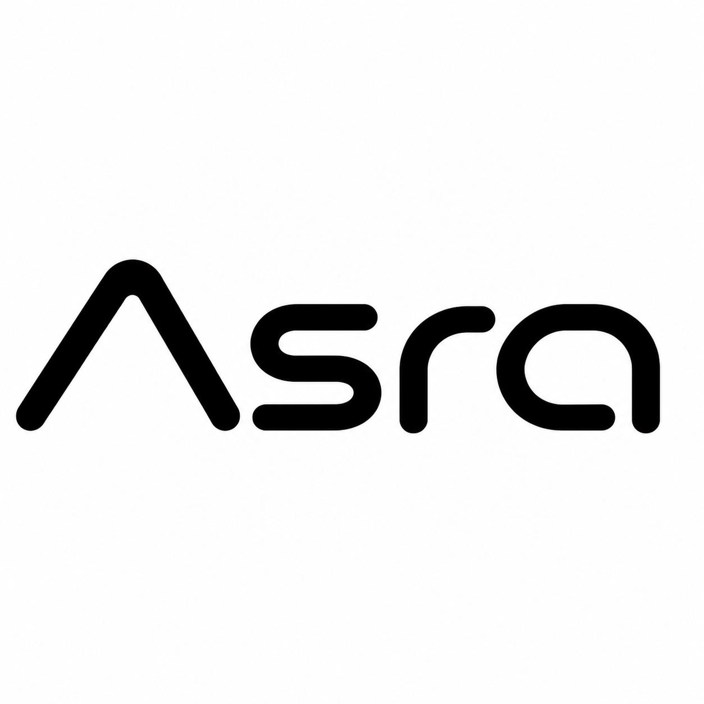
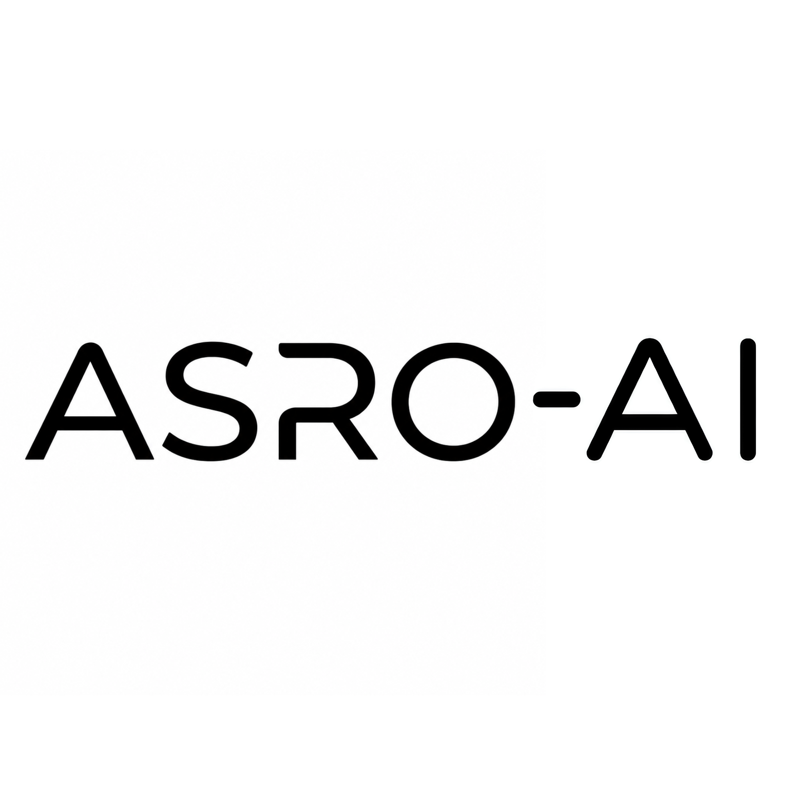
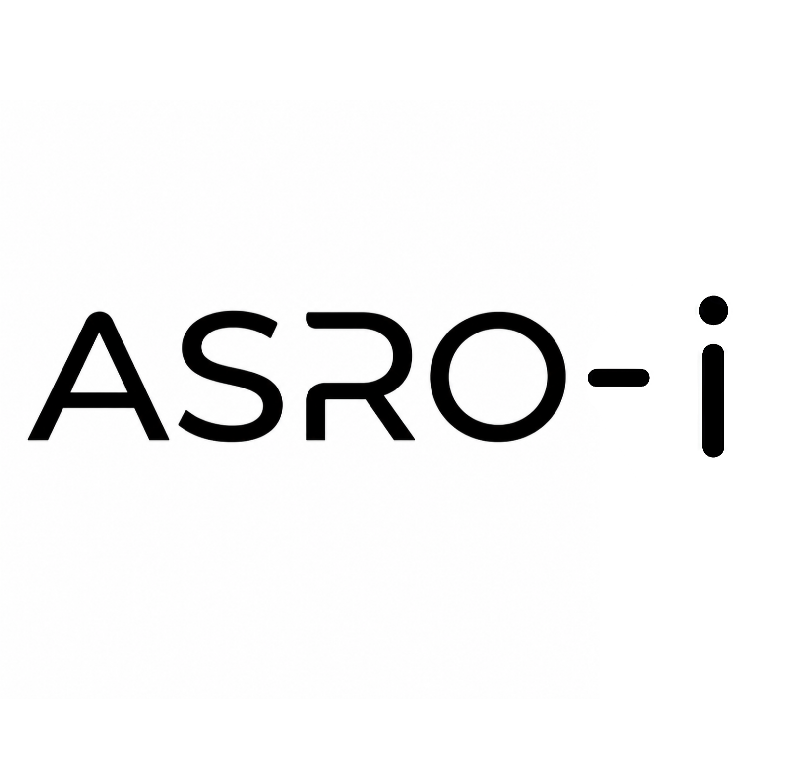
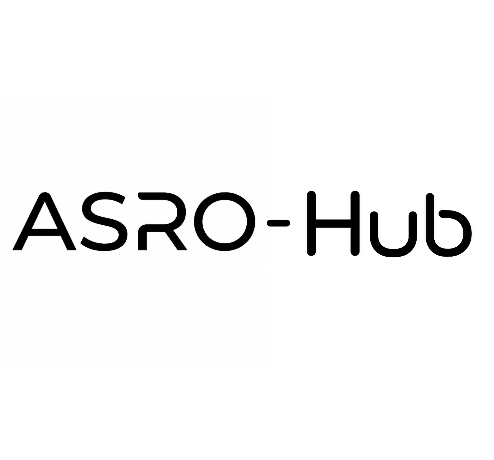
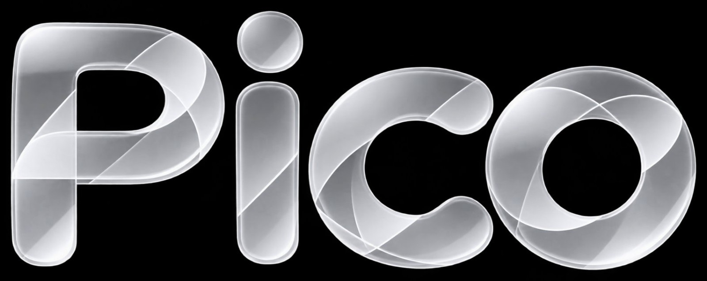

提供中
提供中
話すほど、頼れるAIに。
Kuupは、ASROのAIモデルを活かしたAIチャットサービス。質問への回答はもちろん、文章づくり、調べもの、ファイルの読み解き、画像生成まで。毎日の「聞きたい」「作りたい」に寄り添います。
詳しく見る→
About ASRO

まだない明日を、つくる。
ASROは、AI、ソフトウェア、そしてそれらを支えるインフラまでを一貫して手がけるテクノロジーブランドです。中心にあるのは、自社開発のAIモデル「Asra」。その力を、誰もが使える製品のカタチにしてお届けします。
旧名はSORA CLOUD。2026年8月、ASROへと生まれ変わりました。名前は「そら」のアナグラムであり、「明日」への一歩でもあります。
大げさな数字は掲げません。つくったものを、ひとつずつ、確かなカタチにしていく。それがASROのやり方です。
Products
主力のAIチャット「Kuup」を中心に、学びと創造のための製品を開発しています。カードを開くと、それぞれの詳しい紹介ページに進めます。
提供中
Kuupは、ASROのAIモデルを活かしたAIチャットサービス。質問への回答はもちろん、文章づくり、調べもの、ファイルの読み解き、画像生成まで。毎日の「聞きたい」「作りたい」に寄り添います。
詳しく見る→
 提供中
提供中
時間割、宿題、持ち物、配布物。クラスで共有するものを、ひとつの画面にまとめた学級向けサービスです。
詳しく見る→
「こんなサイトがほしい」「こんなものを作りたい」。そのアイデアを、AIとの対話で実際に動くカタチへ変えていく制作ツールです。
詳しく見る→ 開発中
開発中
画像、図形、テキストを動かしてアニメーションを作るツール。軽快な動作とAIのサポートで、はじめてでも映像づくりを楽しめます。
詳しく見る→ 開発中
開発中
ASRO Accountによる共通ログイン、プロフィール、権限管理。ASROのすべての製品をつなぐ、共有基盤です。
詳しく見る→
提供中ASROが自社で開発するAIモデル。初のモデル「Asra-Nova-Pico」を公開しました。日本語の指示理解とコード生成に強く、ASROの製品の頭脳として働きます。
詳しく見る→ 提供中
提供中
製品を安全に届け続けるための部門。脆弱性の確認と修正、アカウントや公開機能、日々の運用の安全を守ります。
詳しく見る→Divisions
ASROの活動は、専門領域ごとの部門が担います。AI、映像と音声、インフラ、セキュリティ。それぞれが連携し、ひとつの製品体験をつくります。

AIモデルAsraの開発と、KuupなどのAI製品を担当。研究から実装までを一貫して行います。
映像と音声の部門。アニメーション制作ツール「Moot」を担当します。

ASRO-iは、サービスを支えるサーバーとネットワークの運用を担うインフラ部門です。

ASRO Hubは、製品と利用者をつなぐ窓口や共通機能を担います。

Asra — ASRO AI Model
ASRO AIが開発した、Asra初のモデル「Asra-Nova-Pico」を公開しました。まずはKuupをはじめとするASROの製品の中で、その力を届けていきます。
News
ASRO AIが開発した初のモデルです。詳しくはAsraのページをご覧ください。
デザインと構成を一新し、製品ごとの紹介ページと日英切り替えを追加しました。